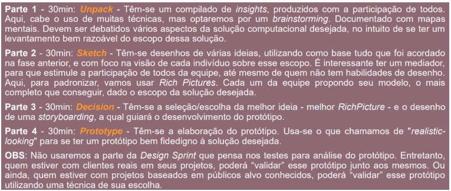
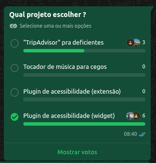

1.1. Módulo Design Sprint
Introdução ao Design Sprint
O Design Sprint é uma metodologia estruturada, em etapas, para entender um problema, gerar soluções e testar rapidamente um protótipo com foco no usuário. Em um espaço curto de tempo, a equipe passa por momentos de entendimento do desafio, ideação, decisão e prototipagem, reduzindo incertezas antes do desenvolvimento completo de uma solução computacional.
Metodologia adaptada para a disciplina
Para esta disciplina, adaptamos o Design Sprint proposto pela professora Milene Serrano, organizando o trabalho em cinco partes principais, com duração aproximada de 30 minutos cada:
- Parte 1 – Unpack: compilado de insights com participação de todos.
- Parte 2 – Sketch: geração e registro de diferentes ideias de solução.
- Parte 3 – Decision: seleção da melhor ideia e organização do fluxo.
- Parte 4 – Prototype: elaboração de um protótipo mais fiel à solução desejada.
- Parte 5 – Test: apresentação do protótipo para feedbacks e validação.
A figura utilizada em aula sintetiza essa adaptação do Design Sprint para a disciplina.

Fonte: SERRANO, Milene.
1.1.1 – Unpack
O Unpack é a primeira etapa do Design Sprint e tem como objetivo reunir e organizar o conhecimento inicial da equipe sobre o problema. Nesse momento, todos os integrantes contribuem com suas perspectivas, dúvidas e hipóteses, criando uma base comum de entendimento antes de partir para a geração de soluções. É uma fase essencial para alinhar o time em torno de um problema real e bem definido.
Parte 1 – Unpack. Nesta etapa realizamos um compilado de insights sobre possíveis projetos, com a participação de todos os integrantes do grupo. Abrimos um documento Word compartilhado para que cada pessoa registrasse livremente suas ideias de solução. Em seguida, fizemos uma votação das opções (enquete no WhatsApp) e discutimos os resultados durante a aula de dúvidas, caracterizando um brainstorming coletivo.

Figura – Enquete de votação do projeto.
Como apoio, produzimos mapas mentais iniciais (detalhados no Módulo Artefato Generalista, seção Mapas Mentais), nos quais organizamos as primeiras propostas, seus objetivos e potenciais desdobramentos. Depois, transferimos e refinamos essas informações em um quadro colaborativo no Miro. O board pode ser acessado em: Miro - Ideias Propostas.
Ao final do Unpack, o grupo confirmou a sua decisão inicial feita pela votação em trabalhar no plugin de acessibilidade (widget). A decisão considerou: a relevância do tema de acessibilidade digital, o alinhamento com o público que pretendemos apoiar, no qual não se concentra somente em um específico, mas em todos aqueles que têm uma certa dificuldade em navegar na web, e o potencial de impacto em diferentes contextos de uso na Web.
O tema da acessibilidade digital emergiu com força durante o Unpack porque toca em uma dor real e subestimada: grande parte dos sites existentes não oferece nenhum suporte a pessoas com deficiência visual, motora ou cognitiva, e adaptar um sistema já construído para atender esses requisitos costuma ser caro e complexo.
Essa definição de projeto, juntamente com os mapas mentais e o quadro no Miro, consolida o entendimento inicial do problema e serve de base para as próximas etapas do Design Sprint.
Participação do grupo e atas de reunião
Quadro de contribuições
| Nome | Participação |
|---|---|
| Felipe Brandim | Colaboração durante o brainstorming |
| Dara Maria | Colaboração durante o brainstorming |
| Enzo Fernandes | Colaboração durante o brainstorming |
| Fábio Fonteles | Colaboração durante o brainstorming |
| Fernanda Vaz | Colaboração durante o brainstorming |
| Isaac Batista | Colaboração durante o brainstorming |
| João Pedro | Colaboração durante o brainstorming |
| Lucas Branco | Colaboração durante o brainstorming |
| Matheus Rodrigues | Colaboração durante o brainstorming e elaboração da etapa Decide (1.1.3) |
| Pedro Cruz | Colaboração durante o brainstorming |
Atas de reunião
As discussões realizadas durante o dia 1 da Design Sprint foram registradas em issues no repositório do projeto, com atas de reunião que detalham decisões e encaminhamentos:
1.1.2 Esboço (Sketch)
Após o mapeamento rigoroso do ecossistema e dos atores no nosso Rich Picture, a equipe avançou para a segunda etapa da Design Sprint: o Esboço. O objetivo desta fase é transformar as informações e os riscos levantados em propostas visuais concretas para a interface do widget de acessibilidade.
Para esta ideação, a equipe adaptou a metodologia padrão e focou na construção direta de fluxos de interação, garantindo que as premissas técnicas fossem respeitadas. O processo foi dividido nas seguintes etapas:
1. Anotações e Alinhamento
A equipe revisou o escopo, as dores do público-alvo (como baixa visão e deficiências motoras) e as restrições de arquitetura. Foram anotadas as premissas essenciais, como a necessidade de um botão de fácil acesso e menus que não conflitassem com o layout do site hospedeiro.
2. Geração de Ideias
Os membros rascunharam livremente como os componentes de acessibilidade (como a Régua de Leitura e os Filtros de Contraste) poderiam se comportar visualmente ao serem injetados na tela, priorizando a usabilidade e a simplicidade.
3. Esboço da Solução (Storyboard)
Como entrega final desta etapa, as melhores ideias foram consolidadas em um storyboard autossuficiente. Este esboço demonstra o fluxo de interação do usuário passo a passo:
- O usuário entra em um portal e encontra barreiras de acessibilidade.
- Identifica, ativa o widget e seleciona a funcionalidade desejada.
- O layout se adapta, proporcionando uma leitura sem distrações.
Registro Visual da Ideação
Abaixo está consolidado o artefato visual gerado pela equipe, que servirá de base estrutural para a etapa de prototipação (Prototype).
Storyboard da Solução (Fluxo Principal)

1.1.3. Decide
Introdução
A fase Decide é a fase em que a equipe olha todas as soluções e ideias que surgiram na etapa de Sketch e decide qual delas vai seguir na construção do protótipo.
Metodologia
Após o brainstorm colaborativo, onde toda a equipe levantou ideias e possíveis funcionalidades, avançamos para a etapa de Sketch, consolidando visualmente as soluções propostas. Em seguida, a equipe se reuniu para analisar todos os artefatos produzidos, especialmente o Rich Picture, que serviu como guia visual para entender o contexto, os stakeholders e os fluxos de informação do sistema. O Rich Picture foi fundamental para identificar quais ideias e funcionalidades teriam maior impacto e relevância para os usuários e para o objetivo do projeto. A partir dessa análise, foi realizada uma discussão estruturada para decidir, de forma colaborativa, quais requisitos deveriam ser priorizados para o protótipo.
Rich Picture
O rich picture é uma representação visual que mostra todos os stakeholders, suas preocupações e como o contexto externo influencia o sistema. No caso do AcessibilidadeJá, ele permite identificar usuários, desenvolvedores, sites hospedeiros e fluxos de informação que impactam o funcionamento do widget. A decisão baseada no rich picture permite que a equipe identifique quais soluções têm maior impacto sobre os stakeholders e o sistema.

Figura 02 — Membro: Dara Maria
Resultado da Decisão
O resultado da Decisão foi a lista de requisito. Os requisitos foram escritos de acordo com as discussões feitas em sala de aula, sugestões nas issues do github e, principalmente, o artefato de Richpicture. O qual demonstra o fluxo de ação do usuário e do desenvolvedor e revela vários requisitos do projeto.
Requisitos funcionais
| ID | Requisito Funcional |
|---|---|
| RF1 | O usuário deve ser capaz de mudar o filtro de contraste entre claro e escuro |
| RF2 | O filtro de contraste deve mudar: fundo de tela, fonte, botões e quaisquer outros elementos relevantes. |
| RF3 | O usuário deve ser capaz de mudar o tamanho da fonte e ícones do site |
| RF4 | O usuário deve ser capaz de mudar a fonte para opções amigáveis para disléxicos e afins |
| RF5 | O usuário deve ser capaz de acionar um guia de leitura na página |
| RF6 | O usuário deve ser capaz de navegar e acionar as funcionalidades da ferramenta por meio de atalhos |
| RF7 | O usuário deve ser capaz de navegar e acionar as funcionalidades por meio de um icone não intrusivo à página |
| RF8 | O desenvolvedor deve ter a liberdade de escolher onde os atalhos vão aparecer para o usuário |
| RF9 | O usuário deve ser capaz de mudar a saturação das cores do site para adequar as necessidades de daltônicos |
| RF10 | O usuário deve ser capaz de mudar o cursor para um tamanho maior |
| RF11 | O usuário deve ser capaz de reverter as mudanças que realizou |
| RF12 | O Desenvolvedor pode escolher desativar alguma das funcionalidades se desejar |
| RF13 | O usuário deve ser capaz de ligar o modo leitura, onde mostra todo o texto do site de forma simples e pouco estimulante |
| RF14 | O usuário deve ser capaz de dar zoom sem perda no site |
| RF15 | O usuário deve ser capaz de mudar o idioma do site |
| RF16 | O usuário deve ser capaz de assistir a um breve tutorial da plataforma |
| RF17 | O usuário deve ser capaz de acionar um dicionário de palavras |
| RF18 | O usuário deve ser capaz de mudar o alinhamento dos textos do site |
| RF19 | O usuário deve ser capaz de dar ênfase em links |
Requsitos não-funcionais
| ID | Requisito Não Funcional |
|---|---|
| RNF01 | O Projeto deve estar de acordo com a lei federal n° 10.098, lei de acessibilidade |
| RNF02 | O Usuário deve ser capaz de utilizar a ferramenta com leitores de telas e outras ferramentas assistivas |
| RNF03 | O Desenvolvedor deve ser capaz de usar os widgets com React JS framework e NextJS |
| RNF04 | O Desenvolvedor deve ser capaz de inserir widgets de maneira fácil e de acordo com o padrão de outras bibliotecas npm |
| RNF05 | O Desenvolvedor deve ser capaz de inserir widgets em projetos maiores sem interferir no resto do projeto |
| RNF06 | Biblioteca deve estar disponível para download no repositório npm |
Backlog do Produto
A partir das decisões tomadas nesta etapa, os itens priorizados foram convertidos em histórias de usuário que compõem o backlog inicial do produto.
| Épico | História de Usuário | Descrição da História | Objetivo |
|---|---|---|---|
| Personalização Visual | [US01] Modo de contraste | Eu, como usuário, quero alternar o contraste para melhorar a legibilidade | Permitir ajustes visuais para melhorar acessibilidade e conforto |
| [US02] Tamanho de fonte e ícones | Eu, como usuário, quero ajustar o tamanho da fonte para enxergar melhor | ||
| [US03] Fonte Acessível | Eu, como usuário, quero usar fontes acessíveis para facilitar a leitura | ||
| [US04] Saturação de Cores | Eu, como usuário, quero ajustar cores para melhor percepção visual | ||
| [US05] Cursor Ampliado | Eu, como usuário, quero um cursor maior para facilitar a navegação | ||
| [US06] Enfase em Links | Eu, como usuário, quero poder dar ênfase em links para poder navegar melhor no site | ||
| Leitura e Compreensão | [US07] Guia de Leitura | Eu, como usuário, quero um guia de leitura para acompanhar o texto | Facilitar leitura e entendimento do conteúdo |
| [US08] Modo Leitura | Eu, como usuário, quero ativar modo leitura para reduzir distrações | Alta | |
| [US09] Dicionário | Eu, como usuário, quero consultar palavras para entender melhor o conteúdo | ||
| [US10] Zoom | Eu, como usuário, quero poder dar zoom para poder ler melhor | ||
| [US11] Alinhamento de texto | Eu, como usuário, quero mudar o alinhamento de textos para poder ler melhor o texto | ||
| Navegação | [US12] Atalhos de Teclado | Eu, como usuário, quero usar atalhos de teclado para navegar rapidamente | Melhorar interação e controle do usuário |
| [US13] Ícone de Acesso | Eu, como usuário, quero acessar funcionalidades por um ícone não intrusivo para navegar mais facilmente | ||
| Configuração | [US14] Reset de Configurações | Eu, como usuário, quero desfazer mudanças realizadas | Permitir controle e persistência das preferências |
| [US15] Salvar Preferências | Eu, como usuário, quero salvar minhas preferências para uso futuro para melhorar a qualidade de uso | ||
| Internacionalização | [US16] Troca de Idioma | Eu, como usuário, quero mudar o idioma para minha língua para entender a página | Adaptar sistema para múltiplos idiomas |
| Suporte | [US17] Tutorial | Eu, como usuário, quero assistir a um tutorial para aprender a usar a ferramenta | Auxiliar o usuário no uso da ferramenta |
1.1.4. Prototype
A fase de Prototype (Prototipação) consiste na etapa em que as ideias e esboços são convertidos em uma representação tangível, interativa e passível de avaliação. Seu principal objetivo não é desenvolver o produto final, mas sim elaborar uma versão realista que simule a experiência do usuário de forma funcional.
No contexto do projeto AcessibilidadeJá, o protótipo atua como um modelo preliminar do sistema, permitindo à equipe visualizar e testar as soluções propostas para acessibilidade. Trata-se de um “produto simulado”, que possibilita a validação de hipóteses, a identificação de problemas de usabilidade e a coleta de feedback relevante junto aos usuários.
Protótipo de Alta Fidelidade:
Autoria: Fernanda Vaz
Protótipo de Alta Fidelidade no figma:
Validação do Protótipo
Introdução
Este vídeo apresenta uma entrevista com um formando em Design sobre um protótipo desenvolvido no Figma do AcessibilidadeJá. O objetivo da entrevista é explorar a experiência do usuário, analisando a usabilidade, a intuitividade e a eficácia do design do protótipo.
O AcessibilidadeJá tem como proposta oferecer uma solução open source de acessibilidade para aplicações web, permitindo que desenvolvedores integrem widgets de acessibilidade em seus sites de forma simples e eficaz, contribuindo para um ambiente digital mais inclusivo. Com esta entrevista, buscamos compreender como um público com conhecimentos em Design avalia a interface, a navegação e as funcionalidades do protótipo, identificando possíveis melhorias para uma versão futura.
Vídeo da Entrevista
Caso o vídeo não carregue, acesse diretamente pelo link: Entrevista no YouTube
Metodologia
Para esta entrevista, foram realizadas perguntas com o intuito de avaliar a usabilidade do protótipo do site. As questões abordaram os seguintes aspectos:
- Primeiras impressões – Como o entrevistado percebeu o layout e a organização do conteúdo ao acessar o protótipo pela primeira vez.
- Navegação e intuitividade – Se as funcionalidades eram claras e se a estrutura do menu facilitava a localização de informações.
- Design e experiência visual – Se as cores, tipografia e elementos gráficos contribuíam para uma experiência condizente com o tema de acessibilidade.
As respostas foram analisadas qualitativamente, buscando identificar pontos fortes e oportunidades de otimização no protótipo. A metodologia adotada permitiu uma avaliação prática e direta, contribuindo para o refinamento do design antes da implementação final do widget.
Histórico de versões
| Versão | Data | Descrição | Autor(es) |
|---|---|---|---|
1.0 |
31/03/2026 | Criação da página | Dara Maria |
1.1 |
03/04/2026 | elaboração e inserção do prototipo | Fernanda Vaz |
1.2 |
03/04/2026 | Elaboração do texto base da etapa 2 da Design Sprint | Dara Maria |
1.3 |
03/04/2026 | Elaboração da etapa 3 (Decide) da Design Sprint | Matheus Rodrigues |
1.4 |
04/04/2026 | Elaboração da etapa 3 Requisitos e História de Usuário | Pedro Cruz |
1.2 |
04/04/2026 | Elaboração do texto base da etapa 2 da Design Sprint | Dara Maria |
1.3 |
04/04/2026 | Verificação e Validação | Fábio Araújo |
1.4 |
04/04/2026 | Elaboração da etapa 1 (Unpack) da design sprint | Enzo Fernandes |
1.5 |
05/04/2026 | Melhoria da seção Unpack e ajustes na etapa Decide | Matheus Rodrigues |